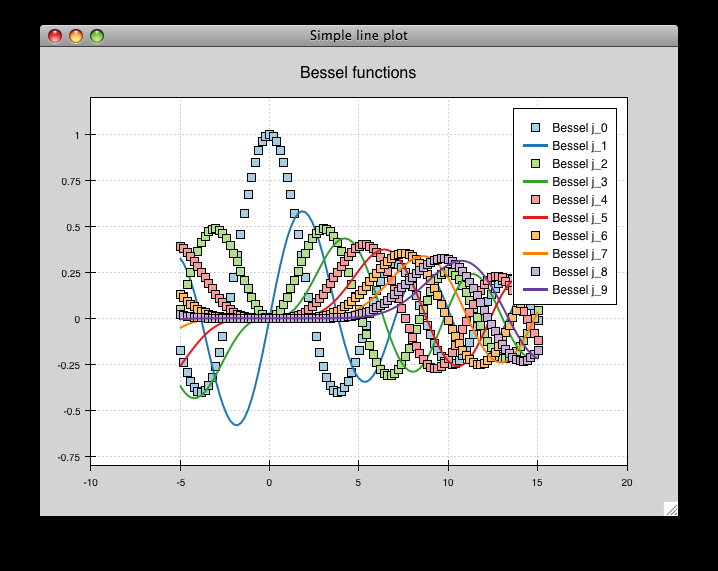
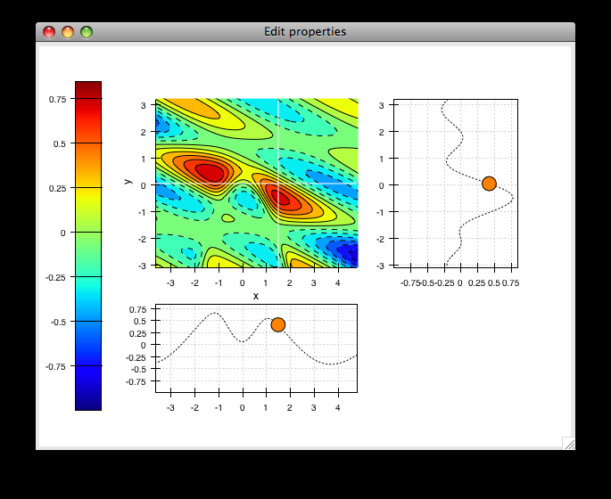

Quickstart¶
|  |  |
{kind=link}
{kind=link}
This section is meant to help users on well-supported platforms and common Python environments get started using Chaco as quickly as possible.
Installation¶
There are several ways to get Chaco. The easiest way is through Enthought Canopy (Canopy) (formerly EPD) which is available for Windows, Linux and Mac OSX and also provides many other useful packages. Chaco may also be available through a package manager on your platform, such as apt on Ubuntu, yum on Redhat or MacPorts on OS X. You can also build Chaco from its source code, but because of the dependencies, the easiest way by far is to install Canopy.
Dependencies¶
Python 2.7 or later
Traits, an event notification framework
Kiva, part of the enable project, for rendering 2-D graphics to a variety of backends across platforms
Enable, a framework for writing interactive visual components, and for abstracting away GUI-toolkit-specific details of mouse and keyboard handling.
NumPy, for dealing efficiently with large datasets
Either wxPython, PyQt (GPL or Commercial license) or PySide (LGPL license) to display interactive plots.
Installing Chaco with Canopy¶
Chaco, the rest of the Enthought Tool Suite, and a lot more are bundled with Enthought Canopy (formerly EPD). Getting Canopy gives you a one-click install of Chaco and all its dependencies at once; however, these packages will be linked to a new instance of Python. Canopy Express is free for all users and contains all that you need to use Chaco.
To get Canopy, go to the Canopy download page, select the desired bundle (Express, Full, TriplePlay) and get the appropriate version for your platform. After running the installer, you will have a working version of Chaco and several examples.
Building Chaco¶
Building Chaco on your machine requires you to build Chaco and each of its dependencies, but it has the advantage of installing Chaco on top of the Python instance you already have installed. The build process may be challenging and will require you to have a C compiler, SWIG, Cython and several development libraries installed.
To do this, you can either:
Install Chaco and its Dependencies from PyPI using pip or using easy_install (part of setuptools). For example
pip install chaco
Note
If you have already installed Chaco and just want to update to the newest version, use
pip install --upgrade chaco
Or, download the source from the Chaco GitHub repository or alternatively as a part of the full Enthought Tool Suite.
Built-in Examples¶
Chaco ships with several examples for testing your installation and to show you what Chaco can do. Almost all of the examples are stand-alone files that you can run individually, from any location. Depending on how you installed Chaco, you may or may not have the examples already.
Location¶
If you installed Chaco as part of Canopy, the location of the examples depends on your platform:
On Windows, they are in the Examples\ subdirectory of your installation location. This is typically
C:\Users\<username>\AppData\Local\Enthought\Canopy\User\Examples\Chaco-<version>. These examples can be browsed from the start menu, by clicking .On Linux, they are in the
Enthought/Canopy_XXbit/User/Examples/Chaco-<version>subdirectory of your installation location.On Mac OS X, they are in the
/Library/Enthought/Canopy_XXbit/User/Examples/chaco-<version>directory.
If you downloaded and installed Chaco from source (from GitHub or via the PyPI tar.gz file), the examples are located in the
examples/subdirectory inside the root of the Chaco source tree, next todocs/and thechaco/directories.If you don’t know how Chaco was installed, you can download the latest versions of examples individually from github:
Chaco examples can be found in the examples/demo/ and
examples/tutorials/ directories. Some are classified by themes and
located in separate directories. Almost all of the Chaco examples are
standalone files that can be run individually. We will first show how to
execute them from the command line, and then we will show how to run Chaco in
an interactive way from IPython. This “shell” mode will be more familiar to
Matplotlib or Matlab users.
Note
Some of these examples can be visualized in our Chaco gallery.
First plots from the command line¶
From the examples/demo directory, run the simple_line example:
python simple_line.py
This opens a plot of several Bessel functions with a legend.
You can interact with the plot in several ways:
To pan the plot, hold down the left mouse button inside the plot area (but not on the legend) and drag the mouse.
To zoom the plot:
Mouse wheel: scroll up to zoom in, and scroll down to zoom out (or the reverse you’re on a version of OS X with ‘natural scrolling’).
Zoom box: Press z, and then draw a box region to zoom in on. (There is no box-based zoom out.) Press Ctrl-Left and Ctrl-Right to go back and forward in your zoom box history.
Drag: hold down the right mouse button and drag the mouse up or down. Up zooms in, and down zooms out.
For any of the above, press Escape to reset the zoom to the original view.
To move the legend, hold down the right mouse button inside the legend and drag it around. Note that you can move the legend outside of the plot area.
To exit the plot, click the “close window” button on the window frame or (on Mac) choose the Quit option on the Python menu. Alternatively, can you press Ctrl-C in the terminal.
You can run most of the examples in the the examples/demo/basic/
directory and the examples/demo/shell/ directory. The
examples/demo/advanced/ directory has some examples that require
additional data or packages. In particular,
spectrum.pyrequires that you have PyAudio installed and a working microphone.data_cube.pyneeds to download about 7.3mb of data from the Internet the first time it is executed, so you must have a working Internet connection. Once the data is downloaded, you can save it so you can run the example offline in the future.
For detailed information about each built-in example, see the Annotated Examples section.
First plots from IPython¶
While all of the Chaco examples can be launched from the command line using the standard Python interpreter, if you have IPython installed, you can poke around them in a more interactive fashion.
Chaco provides a subpackage, currently named the “Chaco Shell”, for doing
command-line plotting like Matlab or Matplotlib. The examples in the
examples/demo/shell/ directory use this subpackage, and they are
particularly amenable to exploration with IPython.
The first example we’ll look at is the lines.py example. First, we’ll
run it using the standard Python interpreter:
python lines.py
This shows two overlapping line plots.

You can interact with this plot just as in the previous section.
Now close the plot, and start IPython with the --gui=qt 1 or
--gui=wx option:
ipython --gui=qt
This tells IPython to start a Qt or Wx mainloop in a background thread. Now run the previous example again:
In [1]: run lines.py
This displays the plot window, but gives you another IPython prompt. You can
now use various commands from the chaco.shell package to interact with
the plot.
Import the shell commands:
In [2]: from chaco.shell import *
Set the X-axis title:
In [3]: xtitle("X data")
Toggle the legend:
In [4]: legend()
After running these commands, your plot looks like this:

The chaco_commands() function display a list of commands with brief
descriptions.
You can explore the Chaco object hierarchy, as well. The chaco.shell
commands are just convenience functions that wrap a rich object hierarchy that
comprise the actual plot. See the Exploring Chaco with IPython section for
information on all you can do with Chaco from within IPython.
Chaco plot embedded in a Traits application¶
The previous section showed how Chaco can be used interactively similarly to Matlab or Matplotlib’s pyplot package
Now, let’s create, from scratch, the simplest possible Chaco plot which is embedded inside a Traits application. This will require more work but will represent the basis for a potential large-scale, custom and powerful rich client application. this is really what Chaco has been written for.
First, some imports to bring in necessary components:
from chaco.api import ArrayPlotData, Plot
from enable.component_editor import ComponentEditor
from traits.api import HasTraits, Instance
from traitsui.api import View, Item
The imports from chaco and enable support the creation of the
plot. The imports from traits bring in components to embed the plot
inside a Traits application. (Refer to the Traits documentation for more details about building an
interactive application using Traits.) Now let’s create a Traits class with a
view that contains only one element: a Chaco plot inside a slightly customized
window:
class MyPlot(HasTraits):
plot = Instance(Plot)
traits_view = View(Item('plot', editor = ComponentEditor(), show_label = False),
width = 500, height = 500,
resizable = True, title = "My line plot")
A few options have been set to control the window containing the plot. Now,
when the plot is created, we would like to pass in our data. Let’s assume the
data is a set of points with coordinates contained in two NumPy arrays x
and y. So, adding an __init__ method to create the Plot object looks as
follows:
class MyPlot(HasTraits):
plot = Instance(Plot)
traits_view = View(Item('plot', editor = ComponentEditor(), show_label = False),
width = 500, height = 500,
resizable = True, title = "My line plot")
def __init__(self, x, y, *args, **kw):
super(MyPlot, self).__init__(*args, **kw)
plotdata = ArrayPlotData(x=x,y=y)
plot = Plot(plotdata)
plot.plot(("x","y"), type = "line", color = "blue")
plot.title = "sin(x)*x**3"
self.plot = plot
Since it inherits from HasTraits, the new class can use all the power of
Traits, and the call to super() in its __init__ method makes sure this
object possesses the attributes and methods of its parent class. Now let’s use
our Traits object. Below, we generate some data, pass it to an instance of
MyPlot and call configure_traits to create the UI:
import numpy as np
x = np.linspace(-14,14,100)
y = np.sin(x)*x**3
lineplot = MyPlot(x,y)
lineplot.configure_traits()
The result should look like

This might look like a lot of code to visualize a function, but this is a relatively simple basis on top of which we can build full-featured applications with custom UIs and custom tools. For example, the Traits object allows you to create controls for your plot at a very high level, add these controls to the UI with very little work, and add listeners to update the plot when the data changes. Chaco also allows you to create custom tools to interact with the plot and overlays that make these tools intuitive and visually appealing.
Footnotes
Where to learn more?¶
To learn more about the power of Chaco and to build powerful rich client applications with custom visualizations, consider going over the Tutorials, webinars, and examples section or learning from the User guide.
License¶
As part of the Enthought Tool Suite, Chaco is free and open source under the BSD license.
Reporting bugs and contributing¶
Since Chaco is open source and hosted on Github, the development version can always be checked out from Github, forked, and modified at will. When a bug is found, please submit an issue in the issue page. If you would like to share a bug fix or a new feature, simply submit a Pull Request from your fork. Don’t forget to specify very clearly what code to run to reproduce the issue, what the logic of the fix is and to add one or more unit tests to ensure future stability. The Pull Request description can and often needs to contain screenshots of the issue or the fix.